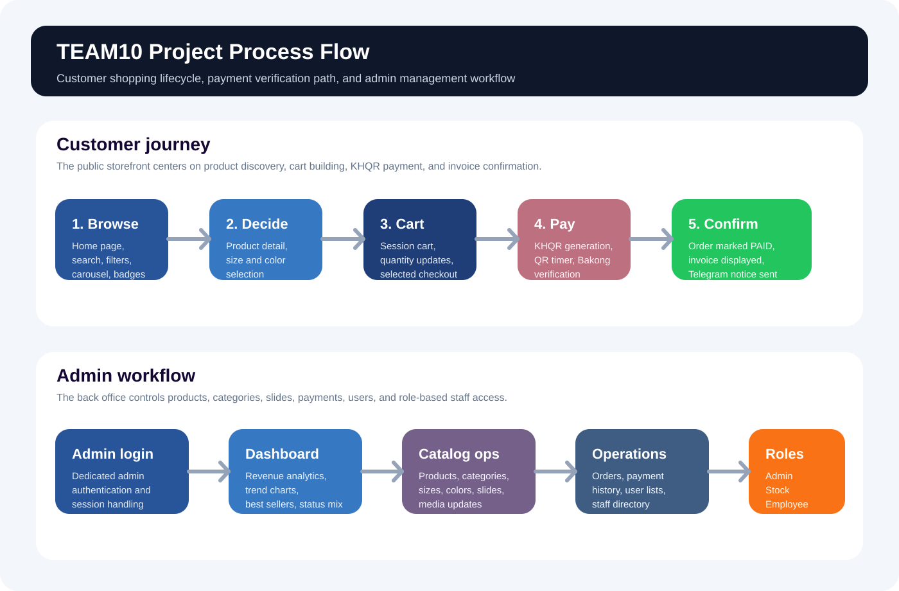

KHQR commerce workflow
Admin analytics dashboard
TEAM10 Clothing Store Project Documentation
This document summarizes the current project design language, colors, typography,
and the end-to-end process across the storefront, checkout flow, invoice confirmation,
and admin management area. All screenshots used in this report come from the assets stored in
docs/assets.
1. Project Summary
TEAM10 Clothing Store is a Laravel-based web application that combines a public shopping interface, user sign in and registration, session cart management, KHQR payment processing, invoice generation, and a role-based admin workspace for managing products, categories, slides, orders, and staff.
Platform and package stack
Main feature groups
- Storefront browsing with category filters and product cards.
- User registration and sign-in with phone or email support.
- Product detail pages with size and color selection.
- Cart, checkout, KHQR payment verification, and invoice output.
- Admin dashboard analytics with revenue, units sold, and payment status charts.
- Role-based staff access for admin, stock controller, and employee accounts.
2. Color System and Typography
The interface is built around a clean blue-led palette with white content surfaces, slate helper text, and a few stronger accents for actions and status. Typography is split between the primary application shell and the authentication screens.
#28559A
Main buttons, dashboard emphasis, action CTAs, and structural highlights.
#1F3E77
Hover depth, darker emphasis, and checkout/admin contrast states.
#3778C2
Chips, charts, focus states, and secondary emphasis blocks.
#150734
Main dark text tone across storefront content and brand identity areas.
#F3F6FB
Shared page background for store pages, admin shell, and auth environments.
#64748B
Subtitles, helper text, meta labels, and lower-emphasis information.
Main application font
Used in the storefront and admin panel to give the product and dashboard experience a sharper, more modern visual tone.
Authentication font
Used in admin and user authentication screens for a softer, cleaner form presentation.
Corner system
The shared layout forces a tight 2px radius across buttons, cards, inputs, and Bootstrap rounded utilities.
Icon system
Icons are used throughout navigation, actions, cart states, analytics, and authentication controls.
3. Project Process
The application has two major tracks: the customer purchase journey and the admin management workflow. The diagram below gives a high-level map of the full system process.

Customer journey
- User opens the home page and browses products by category or search.
- User registers or signs in when account-based checkout is needed.
- User reviews product detail, selects size and color, then adds the item to cart.
- User reviews the cart and proceeds to the KHQR checkout screen.
- The system generates a QR code, stores a pending order, and waits for Bakong verification.
- After confirmation, the order becomes paid and the invoice page is displayed.
Admin workflow
- Admin signs in through the dedicated back-office login page.
- The dashboard shows revenue, trends, paid orders, top products, and order mix.
- Catalog pages manage products, categories, colors, sizes, and slideshow assets.
- Operational pages track order history, paid payments, and staff/user access.
- Role checks decide which staff can create, edit, or delete each resource.
4. Customer-Side Screens
The following images document the customer-facing flow using the updated screenshots from docs/assets.
The refreshed T-shirt image appears on the storefront catalog and admin product listing.

Main page
Shows category filters, product cards, and the updated T-shirt thumbnail in the storefront listing.

User sign up
Registration form with phone number, optional email, and password confirmation workflow.

User sign in
Login screen that accepts either a phone number or an email address.

Product detail
Displays size and color selectors, product image, and the purchase call-to-action layout.

Cart review
Users can review selected items, adjust quantity, remove items, or continue to payment.

KHQR payment
Generates the QR code, reference number, amount summary, and the active payment verification step.

Paid invoice
Shows the completed transaction, customer details, order lines, and payment status after success.
5. Admin-Side Screens
These images capture the management layer of the project, including analytics, catalog tools, and order operations.

Admin login
Dedicated back-office sign-in with a split-panel blue presentation and focused form layout.

Admin dashboard
Revenue metrics, trend charts, top products, payment status, and operational signals for staff.

Product catalog
Admin product management table showing the refreshed T-shirt image, sizes, colors, and action buttons.

Category management
Category list with product counts and add, edit, and delete operations.

Slides management
Homepage slideshow administration with preview thumbnails, position, active status, and controls.

Orders page
Operational order history with product name, amount, status, MD5, and paid/created timestamps.
6. Key Source Files
These files drive the design system, data flow, and process documented in this report.
resources/views/layouts/app.blade.php
Shared application shell and the global 2px radius override.
resources/views/products/_styles.blade.php
Storefront palette, component styling, buttons, cards, and responsive shopping UI rules.
resources/views/admin/layouts/app.blade.php
Admin layout, navigation, typography, card system, and action button styling.
resources/views/auth/login.blade.php
Admin login page design and session-expired handling UI.
routes/web.php
Public routes, user auth, cart, checkout, and admin route definitions.
app/Http/Controllers/ProductController.php
Product listing, search, category filter, and total-bought decoration logic.
app/Http/Controllers/CartController.php
Session-based cart add, update, remove, and clear behaviors.
app/Http/Controllers/PaymentController.php
KHQR generation, pending order creation, verification polling, invoice, and Telegram notification flow.
app/Http/Controllers/UserAuthController.php
User registration, login, phone/email normalization, and logout flow.
app/Http/Controllers/Admin/OrderAdminController.php
Dashboard analytics, revenue aggregation, charts, and operational reporting logic.